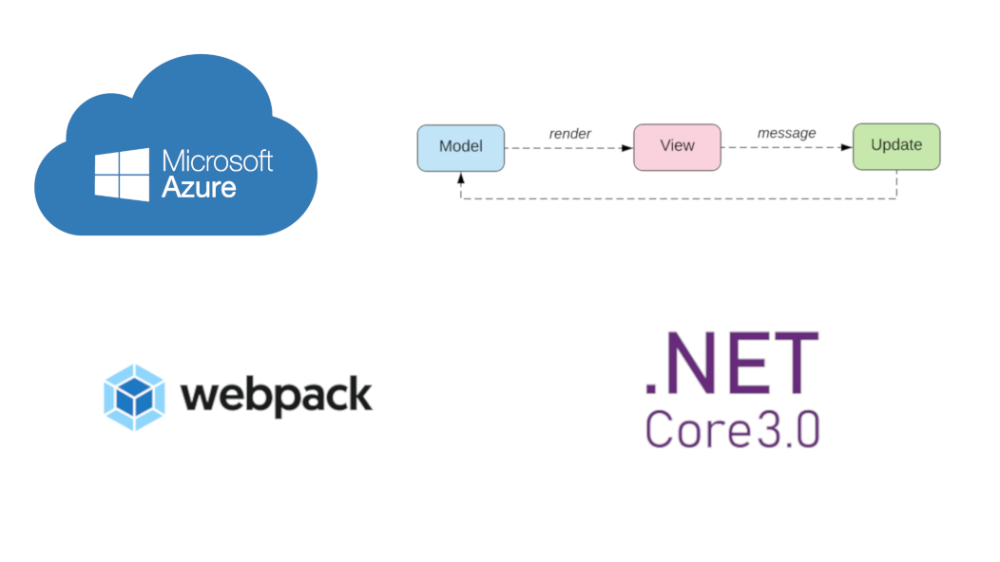
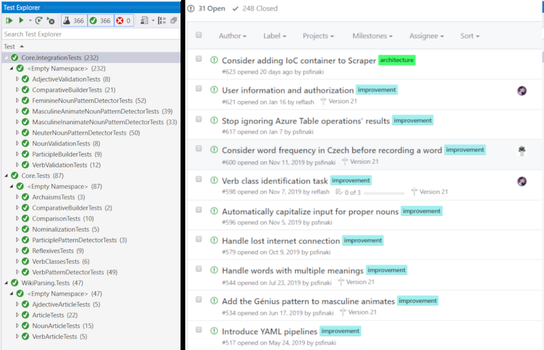

val id : x:'T -> 'T
Full name: Microsoft.FSharp.Core.Operators.id
Full name: Microsoft.FSharp.Core.Operators.id
module Option
from Microsoft.FSharp.Core
from Microsoft.FSharp.Core
val bind : binder:('T -> 'U option) -> option:'T option -> 'U option
Full name: Microsoft.FSharp.Core.Option.bind
Full name: Microsoft.FSharp.Core.Option.bind
val isSome : option:'T option -> bool
Full name: Microsoft.FSharp.Core.Option.isSome
Full name: Microsoft.FSharp.Core.Option.isSome
module Array
from Microsoft.FSharp.Collections
from Microsoft.FSharp.Collections
val contains : value:'T -> array:'T [] -> bool (requires equality)
Full name: Microsoft.FSharp.Collections.Array.contains
Full name: Microsoft.FSharp.Collections.Array.contains
Multiple items
val string : value:'T -> string
Full name: Microsoft.FSharp.Core.Operators.string
--------------------
type string = System.String
Full name: Microsoft.FSharp.Core.string
val string : value:'T -> string
Full name: Microsoft.FSharp.Core.Operators.string
--------------------
type string = System.String
Full name: Microsoft.FSharp.Core.string
val invalidArg : argumentName:string -> message:string -> 'T
Full name: Microsoft.FSharp.Core.Operators.invalidArg
Full name: Microsoft.FSharp.Core.Operators.invalidArg
val dict : keyValuePairs:seq<'Key * 'Value> -> System.Collections.Generic.IDictionary<'Key,'Value> (requires equality)
Full name: Microsoft.FSharp.Core.ExtraTopLevelOperators.dict
Full name: Microsoft.FSharp.Core.ExtraTopLevelOperators.dict
val map : mapping:('T -> 'U) -> array:'T [] -> 'U []
Full name: Microsoft.FSharp.Collections.Array.map
Full name: Microsoft.FSharp.Collections.Array.map
val filter : predicate:('T -> bool) -> array:'T [] -> 'T []
Full name: Microsoft.FSharp.Collections.Array.filter
Full name: Microsoft.FSharp.Collections.Array.filter
Multiple items
module List
from Microsoft.FSharp.Collections
--------------------
type List<'T> =
| ( [] )
| ( :: ) of Head: 'T * Tail: 'T list
interface IEnumerable
interface IEnumerable<'T>
member GetSlice : startIndex:int option * endIndex:int option -> 'T list
member Head : 'T
member IsEmpty : bool
member Item : index:int -> 'T with get
member Length : int
member Tail : 'T list
static member Cons : head:'T * tail:'T list -> 'T list
static member Empty : 'T list
Full name: Microsoft.FSharp.Collections.List<_>
module List
from Microsoft.FSharp.Collections
--------------------
type List<'T> =
| ( [] )
| ( :: ) of Head: 'T * Tail: 'T list
interface IEnumerable
interface IEnumerable<'T>
member GetSlice : startIndex:int option * endIndex:int option -> 'T list
member Head : 'T
member IsEmpty : bool
member Item : index:int -> 'T with get
member Length : int
member Tail : 'T list
static member Cons : head:'T * tail:'T list -> 'T list
static member Empty : 'T list
Full name: Microsoft.FSharp.Collections.List<_>
val contains : value:'T -> source:'T list -> bool (requires equality)
Full name: Microsoft.FSharp.Collections.List.contains
Full name: Microsoft.FSharp.Collections.List.contains
val not : value:bool -> bool
Full name: Microsoft.FSharp.Core.Operators.not
Full name: Microsoft.FSharp.Core.Operators.not
module Seq
from Microsoft.FSharp.Collections
from Microsoft.FSharp.Collections
val forall : predicate:('T -> bool) -> source:seq<'T> -> bool
Full name: Microsoft.FSharp.Collections.Seq.forall
Full name: Microsoft.FSharp.Collections.Seq.forall
val set : elements:seq<'T> -> Set<'T> (requires comparison)
Full name: Microsoft.FSharp.Core.ExtraTopLevelOperators.set
Full name: Microsoft.FSharp.Core.ExtraTopLevelOperators.set
val initInfinite : initializer:(int -> 'T) -> seq<'T>
Full name: Microsoft.FSharp.Collections.Seq.initInfinite
Full name: Microsoft.FSharp.Collections.Seq.initInfinite
val find : predicate:('T -> bool) -> source:seq<'T> -> 'T
Full name: Microsoft.FSharp.Collections.Seq.find
Full name: Microsoft.FSharp.Collections.Seq.find
union case Option.Some: Value: 'T -> Option<'T>
union case Option.None: Option<'T>
type exn = System.Exception
Full name: Microsoft.FSharp.Core.exn
Full name: Microsoft.FSharp.Core.exn
val log : value:'T -> 'T (requires member Log)
Full name: Microsoft.FSharp.Core.Operators.log
Full name: Microsoft.FSharp.Core.Operators.log
Check Your Czech
A SAFE app for practicing Czech grammar
Peter Semkin (@psfinaki)
CONCEPT
Duolingo is not enough

Textbooks are boring and scaring

Well first I thought to learn it but...

How a normal language looks like

Demo

ARCHITECTURE
SAFE stack

False start - BookStore clone

Marketing exists even on GitHub

Start again - basic client-server app

Problem - too much junk in wiktionary

New architecture - with data storage

Problem - too fat Core

What's next?
MEAT
Initial components

Part of speech
1: 2: 3: 4: 5: 6: 7: 8: 9: 10: 11: 12: 13: 14: 15: 16: 17: 18: 19: |
|
Validation
1: 2: 3: 4: 5: 6: |
|
Data extraction
1: 2: 3: 4: 5: 6: 7: |
|
Article framework
1: 2: 3: 4: 5: 6: 7: 8: 9: 10: 11: 12: 13: 14: 15: 16: |
|
Feature - regularity

Regularity detection
1: 2: 3: 4: 5: 6: 7: 8: 9: 10: 11: |
|
Theoretical form building
1: 2: 3: 4: 5: 6: 7: 8: 9: 10: 11: 12: |
|
Feature - multiple grammar categories

Feature - advanced filtering

Pattern detection
1: 2: 3: 4: 5: 6: 7: 8: 9: 10: 11: 12: 13: 14: 15: 16: |
|
New Core layers

WikiString framework
1: 2: 3: 4: 5: 6: 7: 8: 9: 10: 11: 12: 13: 14: 15: 16: 17: |
|
Letters module
1: 2: 3: 4: 5: 6: 7: 8: 9: 10: 11: |
|
Feature - trans-exercise categories

The Mess

What's next?
- Remove validation from data models (#465)
- Simplify article scanning (#266)
- Multiple language quirks (#165, #173, #183, ...)
- New exercise features (#336, #515, ...)
DATA STORAGE
Azure Table Storage
- Schemaless
- Cheap
- Good API
- Azure
- Storage Emulator + Storage Explorer
Data exploring

Table Entity
1: 2: 3: 4: 5: 6: 7: 8: 9: |
|
Working with data
1: 2: 3: 4: 5: 6: 7: 8: 9: 10: 11: 12: |
|
Caveats
- No type providers for .NET Core
- Messy serialization of F# types
What's next?
LOGGING
SAFE default - Application Insights

Leveraging AI in Saturn
1: 2: 3: 4: 5: 6: 7: 8: 9: 10: 11: 12: 13: 14: 15: |
|
Exceptions in AI

Feature - Scraper logging

AI logging in Scraper
1: 2: 3: 4: 5: 6: 7: 8: 9: 10: 11: 12: 13: 14: 15: 16: 17: |
|
Feature - exceptions notifications

Azure Alerts

Feature - request notifications

Azure Log Analytics
1: 2: 3: 4: 5: 6: 7: 8: 9: |
|
Feature - Client logging

AI logging in Fable
1: 2: 3: 4: 5: 6: |
|
What's next?
OPS
SAFE Default - FAKE
1: 2: 3: 4: 5: 6: 7: 8: 9: 10: 11: 12: 13: |
|
ARM Templates - a pain that I'm used to
1: 2: 3: 4: 5: 6: 7: 8: 9: 10: 11: 12: 13: 14: 15: 16: 17: 18: 19: 20: 21: 22: |
|
Azure resources

Feature - Web Jobs

VS publish

Feature - Always On

Availability tests

Feature - deployment slots

Duplication is for free

Feature - Continuous Integration

Azure DevOps Build Pipelines

FAKE -> Azure Devops

Build triggers

Feature - Continuous Deployment

Azure DevOps Release Pipelines

Stages

FAKE -> Azure Devops

What's next?
- Investigate why Scraper job stops sporadically (#252)
- Properly deploy client AI (#496)
- Introduce YAML pipelines (#517)
JOIN!
Check Your Czech on GitHub

- Descriptive issues
- Small & discrete commits
- 200+ tests (unit & integration)
- Leveraging labels, projects, branch policies
Local testing possible

Help needed!
- Frontend - PLEASE PLEASE PLEASE (#147, #174, ...)
- New exercises, new features
- Code robustness (#153, #405, #467)
- Linguistics (#155, #407, ...)
- F# code review
THANKS
Peter Semkin (@psfinaki)
- where
- ping
-
whoami
- music addict
- volunteer
- llama llover
- software developer
- language nerd
- coffee container